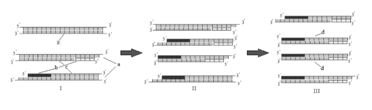
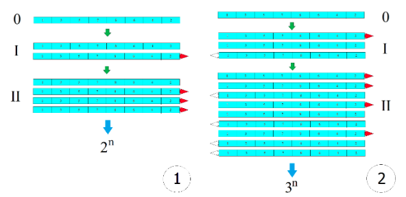
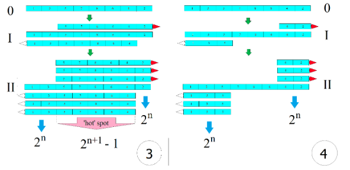

THE OPPORTUNITY MATRICES FOR CHAIN INNOVATIVE TRANSFORMATION OF ECONOMY: THE CITE CONCEPT
I - intended for developers of “teams” (using the algorithm of the topological representation of economic processes on the world map represents those economic systems in which a request for innovative products is formed);
II - for investors (allows, in addition to choosing the presented project presentations, to calculate possible cooperation options and financial results based on the algorithm of the topological presentation of economic processes);
III - for researchers (allows initiative and active people who do not have professional programming skills, etc., to present the idea of their project and form (attract) a team of like-minded people to work on the project) growth-startup-funding-by-industry . As recent studies have shown, all countries strive to enter the sphere of “open access” in many research areas, and there is an urgent need for the formation of such projects. Moreover, this niche is free in many countries. Why create a bike? Let's join forces to shape the digital infrastructure! global-startup-exits
The peculiarity of the project is the use of the author’s development “Matrices of Opportunities for the Chain Innovative Transformation of the Economy: CITE Concept”
What do we want to achieve?
First of all, the maximum concentration of thematic content, the formation of a discussion platform for the search for like-minded people.
Secondly, to optimize the success of modern innovative products to the maximum and minimize the risks of failure.
Methodology
Economic systems are continuously becoming more complex. The methods used to describe them are also complex, which is the basis for the study of the theory of networks, nonlinear dynamics, and complex systems with suddenly arising properties that are not susceptible to conjectures and that contradict reductionism. This is the direct result of the scientific and technical progress and innovations that provide economic systems with additional opportunities for growth and development. For example, the introduction of computer technologies and networks into economics allows us to reach a qualitatively new level of efficiency in the organization of economic processes, particularly through automation and robotization of business processes. Over the long-term, many achievements have been made in economics; however, despite the multitude of studies and research that describe economic processes and their patterns, modern economic dynamics require new, combined, and most importantly visual and effective approaches to decision making, which will save time and, accordingly, reduce the likelihood of lost profits.
With the progressive growth of the global economy and the concomitant onset of economic crises, there is an urgent need to forecast and model economic processes to form a strategy for sustainable development, balancing active government regulation and economic liberalism. The possibility to foresee and resolve a sudden situation has always been valued in economic theory. Unfortunately, in the course of economic analysis it is not possible to conduct controlled experiments. In our opinion, the solution to this problem may be the use of convergent technologies developed from natural systems that have proven themselves in areas other than the economy, where experimentation is applicable. In this paper, we propose to use the polymerase chain reaction (PCR) method, which is widely used in molecular biology, for the modelling of economic processes. This is a method used in the laboratory for the rapid cloning of a specific region of DNA, which in turn has a direct analogy with cellular DNA replication in biology and nuclear reactions in physics. We noticed that, in many respects, the main components of the PCR reaction mixture have direct analogues in economic processes, and that the principle of polymerase chain reaction can be successfully applied to describe some economic processes, including the incremental growth of the economic potential of a country.
To begin with, we would like to more deeply draw an analogy between the convergent approach we are proposing for a chain-based innovative transformation of the economy (СITE) using the example of the revolutionary method used in molecular biology – PCR.
Polymerase chain reaction is a method of rapid cloning (amplification) of a specific section of DNA in vitro during a programmed run of 30-40 cycles (Saiki et al., 1988). Polymerase chain reaction was invented by the American biochemist Kary Mullis in 1983. The availability and simplicity of PCR have made this method an indispensable application in various areas of molecular genetics research. The concept of PCR is based on the DNA template and short DNA fragments (primers) that limit the amplification region.
Each PCR cycle consists of three stages: denaturation (separation of the complementary strands of DNA strands), annealing of primers (attachment to the DNA strands), and chain synthesis carried out by the DNA polymerase enzyme. The number of amplicons formed during PCR can be found by the following formula: A = (2n-2n)×k, where n is the number of cycles and k is the number of DNA matrices. Based on the formula, if there is one DNA template, the first two amplicons (the target PCR product) appear in the 3rd cycle. In the following cycles, the amplicons formed serve as matrices for the synthesis of new amplicons, which is why the reaction is called a chain reaction (Figure 1).
Figure 1. PCR scheme: I, II, III (1st, 2nd and 3rd cycles); 0 – DNA matrix; d – amplicons. The PCR cycle includes: a – denaturation, b – primer annealing, c – chain synthesis.
Now, similar to the DNA matrix, we will create a matrix for the chain innovative transformation of the economy (CITE). Drawing an analogy with respect to the economy, there is a category without the existence of which it is difficult to imagine the functioning of any country. This is the gross domestic product (GDP), the total current market value of all final goods and services produced by the economy of a country over a certain period of time with the participation of all types of production within the national territory. All sectors of the economy associated with the consumption and accumulation of inventory values are taken into account, including exports, thus the GDP indicator includes all information about the structure of a nation’s economy.
In our opinion, in the 21st century, the GDP matrix should be built based on the innovative potential of the country as the main source of GDP growth. The idea behind the creation of the GDP matrix is to obtain innovative products and opportunity matrices, which will be formed by chains of sectors of the economy using the following algorithm. The most innovatively developed sectors of the economy are located at the edges of the GDP matrix according to the queue (for example, 1-3-5-7-8-6-4-2). In such a scheme, innovatively less developed sectors of the economy, located in the middle of the GDP matrix, have the most contacts, which give them the opportunity to gain more skills and abilities (↑: high innovative growth; ↓: low innovative growth). The most distal sectors of the matrix have fewer contacts, but in view of greater economic development, they will generate the innovative ideas and be the last link forming or receiving the end-product (Figure 2). Thus, the extreme sectors of the GDP matrix are analogues of the primers in PCR and limit the scope of innovation amplification (Figure 1).
Figure 2. Algorithm for constructing a GDP matrix using the example of 8 industries.
As a result, there is a progression (amplification) in the growth of the economic potential of the country with the advent of each new innovative product, i.e., there is an increase in new knowledge and skills (especially in the lagging sectors of the economy) with each new cycle of CITE, which leads to an increase in the number of opportunity matrices in the innovation aspect. Each newly formed matrix can serve as a basis for new ideas and products, i.e., the formed opportunity matrix (GDP') shows the ability to grow, and is similar to the amplicon in PCR.
It should be noted that the ranking proposed by us (Figure 2) is not strict, but rather desirable, and other options for constructing a GDP matrix are possible (the 1st principle of the CITE concept); for example, a full matrix: 1-5-7-6-8-4-2-3, or a shortened one: 5-6-8-7-3. Presented in Figure 3, the topological scheme helps to clearly demonstrate that the most economically efficient situation occurs in the 2nd case, when the incremental growth occurs according to the formula 3n, where n is every other innovative cycle. In this instance, the most favourable conditions are created (a powerful flow of cash and innovations), which leads to their constant increase during the transition from sector to sector. This flow is created by the desire of sectors to make a profit. To us, this aspiration is analogous to a protein catalyst (DNA polymerase) in PCR. As a result, a new chain is being built, a new matrix leading to the formation of the next innovative product. Such a newly formed GDP matrix (or opportunity matrix) is a derivative of the original GDP matrix, with the difference that it has a higher potential to create a certain product and can be used to create another innovative product or an improved version of the previous one.
Since in the 2nd case the chain functions both in the forward (1→3→5→7→8→6→4→2) and in the opposite (1←3←5←7←8←6←4←2) direction, any new GDP' matrix (or opportunity matrix) formed can also work in both directions. This is due to the fact that the initial GDP matrix was innovatively growing in both directions; therefore, it will always be necessary to make small changes and implement modernization to continue producing new innovative products in both directions.
The most realistic situation is that of the 3rd case, when the growth of a new GDP' matrix does not occur from the very edge. It should be noted here that the middle portion (intersection) of the formed matrices grows most powerfully, according to the formula 2 n + 1–1, and represents the ‘hot’ spot of innovations. If in the next set of cycles, the GDP matrix launches new innovative products formed within this ‘hot’ spot in both directions, as presented in the 2nd case, this will lead to an increase in the innovation potential of the median area according to the 3n formula. Cases 1 and 4, where the growth of the innovation potential is based on the 2n formula, are the least productive, but clearly show that, to obtain an innovative product, the longest intersectoral chain possible should be used, which should function in both directions with the formation of an intersection to create the maximum effect. Again, it should be noted that CITE does not force the economy to function in this way, but it clearly demonstrates how to optimize the incremental growth of the innovative potential of a country depending on the situation (the 2nd principle of the CITE concept).
It should also be noted that one of the most important properties of GDP matrices is their fractal nature. The fractality of GDP matrices is the ability of each individual segment of a matrix (cluster, enterprise, team of employees) to repeat in its functioning and development the properties of the entire matrix as a whole and to be reproduced at different scales with inherent features at each level. Thus, while each GDP matrix has its own dimension (national economy, cluster economy, enterprise), it retains at the same time all of its inherent functional properties. The structure of the GDP matrix is not constant and may become obsolete, thereby requiring its further evolutionary development (or adaptation). Such development may be manifested by the formation of new sectors of the economy or a significant improvement in the old ones. Each individual opportunity matrix (GDP') is a variant of the initial GDP matrix and is formed as the result of a chain innovation transformation based on the national economy. The total result of the functioning opportunity matrices at a certain point in time forms the total GDP matrix of the country.
Also, we would like to emphasize that the proposed matrix allows us to determine the main sources of emerging ideas for CITE. This is confirmed by the history of the countries considered and the time periods over which their reforms occurred.
 Figure 3. Four cases of the formation of intersectoral chains on the GDP matrix and the formulas describing the incremental growth of the innovative potential of a country: 0 – the formation of a GDP matrix; I and II – the 1st and 2nd cycles of the chain innovation transformation of the economy.